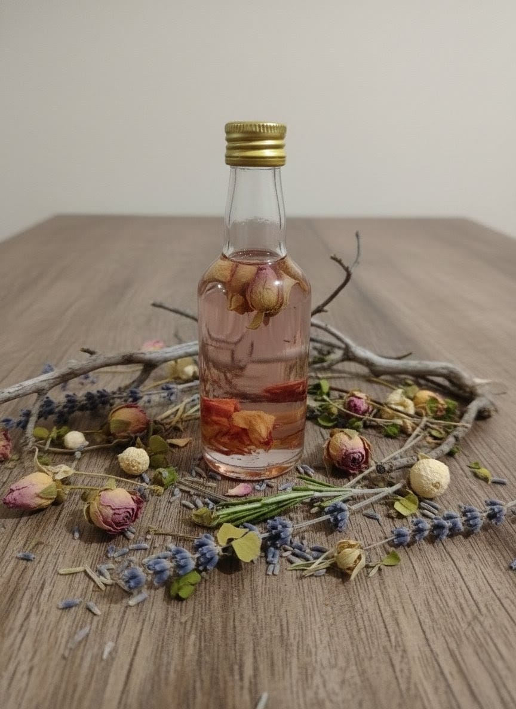

A fluidez da intenção e a alquimia botânica
ÓleosArtesanais
Preparos de unção, consagração e direcionamento para diferentes práticas e propósitos.
Ver na loja
NythraAteliê
“Ungir é um ato de soberania. Quando o óleo toca a pele ou o objeto, ele cria um selo entre o visível e o invisível, carregando a alma das plantas e o sopro da bruxa.”— Tratado sobre óleos e selos de poder01 / Essência
A magia do toque
Os Óleos Artesanais são preparos de unção, consagração e direcionamento. Cada frasco reúne alquimia botânica, intenção ritualística e o fundamento necessário à finalidade para a qual foi criado.
Preparados em pequenos lotes ou de maneira personalizada, os óleos podem ser utilizados em práticas espirituais, na consagração de objetos e em trabalhos de intenção. Cada gota é consagrada de acordo com o propósito do preparo.
A coleção contempla diferentes campos de atuação, dos cuidados de proteção e equilíbrio às práticas de prosperidade, magnetismo, ancestralidade e fortalecimento pessoal.
Finalidades
e caminhos
Linhas criadas para acompanhar intenções distintas e diferentes formas de prática ritualística.
Luxúria e magnetismo
Prosperidade
Proteção e defesa
Limpeza e banimento
Equilíbrio energético
Poder pessoal
Ancestralidade
03 / Orientações
Uso consciente e cuidado
Antes de aplicar na pele, confira a composição e verifique se o óleo foi indicado para uso corporal. Faça um teste em uma pequena área e não utilize ingredientes aos quais tenha alergia ou sensibilidade. Não ingerir; evite olhos, mucosas, pele lesionada e exposição inadequada ao sol. Mantenha fora do alcance de crianças e animais.
Loja oficial
Consagrea sua intenção
Conheça os óleos do ateliê e escolha a composição que melhor acompanha o seu propósito.
Explorar óleos na loja